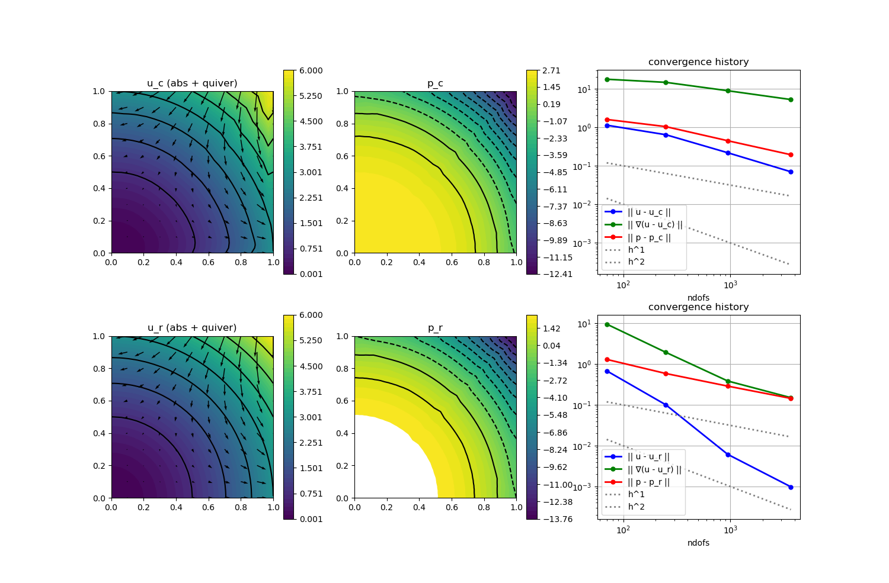

222 : Pressure-robustness 2D
This example studies two benchmarks for pressure-robust discretisations of the stationary Navier-Stokes equations that seek a velocity $\mathbf{u}$ and pressure $\mathbf{p}$ such that
\[\begin{aligned} - \mu \Delta \mathbf{u} + (\mathbf{u} \cdot \nabla) \mathbf{u} + \nabla p & = \mathbf{f}\\ \mathrm{div}(u) & = 0 \end{aligned}\]
with (possibly time-dependent) exterior force $\mathbf{f}$ and some viscosity parameter $\mu$.
Pressure-robustness is concerned with gradient forces that may appear in the right-hand side or the material derivative and should be balanced by the pressure (as divergence-free vector fields are orthogonal on gradient fields). Here, two test problems are considered:
- HydrostaticTestProblem() : Stokes (without convection term) and $\mathbf{f} = \nabla p$ such that $\mathbf{u} = 0$
- PotentialFlowTestProblem() : Navier-Stokes with $\mathbf{f} = 0$ and $\mathbf{u} = \nabla h$ for some harmonic function
In both test problems the errors of non-pressure-robust discretisations scale with $1/\mu$, while the pressure-robust discretisation solves $\mathbf{u} = 0$ exactly in test problem 1 and gives much better results in test problem 2.
module Example222_PressureRobustness2D
using GradientRobustMultiPhysics
using ExtendableGrids
using GridVisualize
# problem data
function HydrostaticTestProblem()
# Stokes problem with f = grad(p)
# u = 0, p = x^3+y^3 - 1//2
function P1_pressure!(result,x)
result[1] = x[1]^3 + x[2]^3 - 1//2
end
u = DataFunction([0,0]; xdim = 2, name = "u")
p = DataFunction(P1_pressure!, [1,2]; name = "p", dependencies = "X", bonus_quadorder = 3)
f = ∇(p)
return p,u,∇(u),f,false
end
function PotentialFlowTestProblem()
# NavierStokes with f = 0
# u = grad(h) with h = x^3 - 3xy^2
# p = - |grad(h)|^2 + 14//5
function P2_pressure!(result,x)
result[1] = - 1//2 * (9*(x[1]^4 + x[2]^4) + 18*x[1]^2*x[2]^2) + 14//5
end
function P2_velo!(result,x)
result[1] = 3*x[1]^2 - 3*x[2]^2;
result[2] = -6*x[1]*x[2];
end
u = DataFunction(P2_velo!, [2,2]; name = "u", dependencies = "X", bonus_quadorder = 2)
p = DataFunction(P2_pressure!, [1,2]; name = "p", dependencies = "X", bonus_quadorder = 4)
f = DataFunction([0,0]; name = "f")
return p,u,∇(u),f,true
end
function solver(Problem, xgrid, FETypes, viscosity = 1e-2; nlevels = 4, target_residual = 1e-10, maxiterations = 20, Plotter = nothing)
# load problem data and set solver parameters
ReconstructionOperator = FETypes[3]
p,u,∇u,f,nonlinear = Problem()
# setup classical (Problem) and pressure-robust scheme (Problem2)
Problem = IncompressibleNavierStokesProblem(2; viscosity = viscosity, nonlinear = false)
add_boundarydata!(Problem, 1, [1,2,3,4], BestapproxDirichletBoundary; data = u)
Problem2 = deepcopy(Problem)
Problem.name = "Stokes problem (classical)"
Problem2.name = "Stokes problem (p-robust)"
# assign right-hand side
add_rhsdata!(Problem, 1, LinearForm(Identity, f))
add_rhsdata!(Problem2, 1, LinearForm(ReconstructionOperator, f))
# assign convection term
if nonlinear
add_operator!(Problem,[1,1], ConvectionOperator(1, Identity, 2, 2))
add_operator!(Problem2,[1,1], ConvectionOperator(1, ReconstructionOperator, 2, 2; test_operator = ReconstructionOperator))
end
# define bestapproximation problems
BAP_L2_u = L2BestapproximationProblem(u; bestapprox_boundary_regions = [1,2,3,4])
BAP_L2_p = L2BestapproximationProblem(p; bestapprox_boundary_regions = [])
BAP_H1_u = H1BestapproximationProblem(∇u, u; bestapprox_boundary_regions = [1,2,3,4])
# define ItemIntegrators for L2/H1 error computation
L2Error_u = L2ErrorIntegrator(u, Identity)
L2Error_p = L2ErrorIntegrator(p, Identity)
H1Error_u = L2ErrorIntegrator(∇u, Gradient)
Results = zeros(Float64, nlevels, 9)
NDofs = zeros(Int, nlevels)
# loop over refinement levels
Solution, Solution2 = nothing, nothing
for level = 1 : nlevels
# uniform mesh refinement
xgrid = uniform_refine(xgrid)
# get FESpaces
FES = [FESpace{FETypes[1]}(xgrid), FESpace{FETypes[2]}(xgrid; broken = true)]
# solve both problems
Solution = solve(Problem, FES; maxiterations = maxiterations, target_residual = target_residual, anderson_iterations = 5)
Solution2 = solve(Problem2, FES; maxiterations = maxiterations, target_residual = target_residual, anderson_iterations = 5)
# solve bestapproximation problems
BA_L2_u = FEVector("Πu",FES[1])
BA_L2_p = FEVector("πp",FES[2])
BA_H1_u = FEVector("Su",FES[1])
solve!(BA_L2_u, BAP_L2_u)
solve!(BA_L2_p, BAP_L2_p)
solve!(BA_H1_u, BAP_H1_u)
# compute L2 and H1 errors and save data
NDofs[level] = length(Solution.entries)
Results[level,1] = sqrt(evaluate(L2Error_u,Solution[1]))
Results[level,2] = sqrt(evaluate(L2Error_u,Solution2[1]))
Results[level,3] = sqrt(evaluate(L2Error_u,BA_L2_u[1]))
Results[level,4] = sqrt(evaluate(L2Error_p,Solution[2]))
Results[level,5] = sqrt(evaluate(L2Error_p,Solution2[2]))
Results[level,6] = sqrt(evaluate(L2Error_p,BA_L2_p[1]))
Results[level,7] = sqrt(evaluate(H1Error_u,Solution[1]))
Results[level,8] = sqrt(evaluate(H1Error_u,Solution2[1]))
Results[level,9] = sqrt(evaluate(H1Error_u,BA_H1_u[1]))
end
# print convergence history
print_convergencehistory(NDofs, Results[:,1:3]; X_to_h = X -> X.^(-1/2), ylabels = ["||u-u_c||", "||u-u_r||", "||u-Πu||"])
print_convergencehistory(NDofs, Results[:,4:6]; X_to_h = X -> X.^(-1/2), ylabels = ["||p-p_c||", "||p-p_r||", "||p-πp||"])
print_convergencehistory(NDofs, Results[:,7:9]; X_to_h = X -> X.^(-1/2), ylabels = ["||∇(u-u_c)||", "||∇(u-u_r)||", "||∇(u-Su)||"])
# plot
p = GridVisualizer(; Plotter = Plotter, layout = (2,3), clear = true, resolution = (1500,1000))
scalarplot!(p[1,1],xgrid,view(nodevalues(Solution[1]; abs = true),1,:), levels = 7)
vectorplot!(p[1,1],xgrid,evaluate(PointEvaluator(Solution[1], Identity)), spacing = 0.1, clear = false, title = "u_c (abs + quiver)")
scalarplot!(p[1,2],xgrid,view(nodevalues(Solution[2]),1,:), levels = 11, title = "p_c")
scalarplot!(p[2,1],xgrid,view(nodevalues(Solution2[1]; abs = true),1,:), levels = 7)
vectorplot!(p[2,1],xgrid,evaluate(PointEvaluator(Solution2[1], Identity)), spacing = 0.1, clear = false, title = "u_r (abs + quiver)")
scalarplot!(p[2,2],xgrid,view(nodevalues(Solution2[2]),1,:), levels = 11, title = "p_r")
convergencehistory!(p[1,3], NDofs, Results[:,[1,7,4]]; add_h_powers = [1,2], X_to_h = X -> X.^(-1/2), ylabels = ["|| u - u_c ||", "|| ∇(u - u_c) ||", "|| p - p_c ||"])
convergencehistory!(p[2,3], NDofs, Results[:,[2,8,5]]; add_h_powers = [1,2], X_to_h = X -> X.^(-1/2), ylabels = ["|| u - u_r ||", "|| ∇(u - u_r) ||", "|| p - p_r ||"])
# return last L2 error of p-robust method for testing
return Results[end,2]
end
# everything is wrapped in a main function
function main(; problem = 2, verbosity = 0, nlevels = 4, viscosity = 1e-2, Plotter = nothing)
# set log level
set_verbosity(verbosity)
# set problem to solve
if problem == 1
Problem = HydrostaticTestProblem
elseif problem == 2
Problem = PotentialFlowTestProblem
else
@error "No problem defined for this number!"
end
# set grid and problem parameters
xgrid = grid_unitsquare(Triangle2D) # initial grid
# choose finite element discretisation
#FETypes = [H1BR{2}, L2P0{1}, ReconstructionIdentity{HDIVRT0{2}}] # Bernardi--Raugel with RT0 reconstruction
FETypes = [H1BR{2}, L2P0{1}, ReconstructionIdentity{HDIVBDM1{2}}] # Bernardi--Raugel with BDM1 reconstruction
#FETypes = [H1CR{2}, L2P0{1}, ReconstructionIdentity{HDIVRT0{2}}] # Crouzeix--Raviart with RT0 reconstruction
# run
solver(Problem, xgrid, FETypes, viscosity; nlevels = nlevels, Plotter = Plotter)
return nothing
end
# test function that is called by test unit
# tests if hydrostatic problem is solved exactly by pressure-robust methods
function test(; Plotter = nothing)
xgrid = uniform_refine(grid_unitsquare_mixedgeometries())
testspaces = [[H1CR{2}, L2P0{1}, ReconstructionIdentity{HDIVRT0{2}}],
[H1BR{2}, L2P0{1}, ReconstructionIdentity{HDIVRT0{2}}],
[H1BR{2}, L2P0{1}, ReconstructionIdentity{HDIVBDM1{2}}]
]
error = []
for FETypes in testspaces
push!(error, solver(HydrostaticTestProblem, xgrid, FETypes, 1; nlevels = 1))
println("FETypes = $FETypes error = $(error[end])")
end
xgrid = uniform_refine(grid_unitsquare(Triangle2D))
testspaces = [
[H1P2B{2,2}, H1P1{1}, ReconstructionIdentity{HDIVRT1{2}}]
]
error = []
for FETypes in testspaces
push!(error, solver(HydrostaticTestProblem, xgrid, FETypes, 1; nlevels = 1, Plotter = Plotter))
println("FETypes = $FETypes error = $(error[end])")
end
return maximum(error)
end
endThis page was generated using Literate.jl.
Default output:
julia> Example222_PressureRobustness2D.main()
┌ Info: ========== Solving Stokes problem (classical) ==========
│ Equation (1.1) momentum equation for u (discretised by H1BR{2}, ndofs = 54)
└ Equation (1.2) incompressibility constraint for p (discretised by L2P0{1} (broken), ndofs = 16)
ITERATION | LSRESIDUAL | NLRESIDUAL
--------------------------------------
1 | 1.314850e-16 | 3.907408e+00
2 | 1.052450e-15 | 1.274009e+00
3 | 1.754827e-15 | 1.579942e+00
4 | 1.281053e-15 | 6.859809e-01
5 | 1.454458e-15 | 4.477920e-01
6 | 1.683222e-15 | 3.162627e-01
7 | 1.823850e-15 | 3.153493e-01
8 | 1.317148e-15 | 3.439853e-01
9 | 1.277360e-15 | 2.469638e-01
10 | 1.331823e-15 | 1.880776e-01
11 | 1.092386e-15 | 2.331640e-01
12 | 9.945640e-16 | 1.719761e-01
13 | 1.420803e-15 | 1.236650e-01
14 | 1.283616e-15 | 1.532406e-01
15 | 1.127529e-15 | 6.657050e-02
16 | 1.141009e-15 | 4.815822e-02
17 | 8.908768e-16 | 3.579211e-02
18 | 1.391551e-15 | 1.615671e-02
19 | 1.072218e-15 | 1.255390e-02
20 | 1.138280e-15 | 5.543517e-03
┌ Warning: maxiterations reached!
└ @ GradientRobustMultiPhysics ~/work/GradientRobustMultiPhysics.jl/GradientRobustMultiPhysics.jl/src/solvers.jl:1010
┌ Warning: residual was larger than desired target_residual = 1.0e-10!
└ @ GradientRobustMultiPhysics ~/work/GradientRobustMultiPhysics.jl/GradientRobustMultiPhysics.jl/src/solvers.jl:1413
┌ Info: ========== Solving Stokes problem (p-robust) ==========
│ Equation (1.1) momentum equation for u (discretised by H1BR{2}, ndofs = 54)
└ Equation (1.2) incompressibility constraint for p (discretised by L2P0{1} (broken), ndofs = 16)
ITERATION | LSRESIDUAL | NLRESIDUAL
--------------------------------------
1 | 1.314850e-16 | 4.356218e+00
2 | 1.211160e-15 | 3.427807e-01
3 | 8.330386e-16 | 2.616497e-01
4 | 1.148612e-15 | 2.423814e-01
5 | 1.139814e-15 | 1.985077e-01
6 | 1.133984e-15 | 1.334100e-01
7 | 8.886731e-16 | 5.475030e-02
8 | 1.116529e-15 | 2.884838e-02
9 | 1.087285e-15 | 4.588907e-03
10 | 1.021256e-15 | 2.626320e-03
11 | 1.042799e-15 | 1.422550e-03
12 | 1.945706e-15 | 7.924977e-04
13 | 1.278900e-15 | 6.584443e-04
14 | 8.183917e-16 | 6.852785e-04
15 | 1.211504e-15 | 2.363456e-04
16 | 9.694902e-16 | 1.426986e-05
17 | 1.278405e-15 | 5.132736e-06
18 | 1.577798e-15 | 1.535328e-06
19 | 1.409727e-15 | 2.103704e-07
20 | 9.725721e-16 | 6.903052e-08
┌ Warning: maxiterations reached!
└ @ GradientRobustMultiPhysics ~/work/GradientRobustMultiPhysics.jl/GradientRobustMultiPhysics.jl/src/solvers.jl:1010
┌ Warning: residual was larger than desired target_residual = 1.0e-10!
└ @ GradientRobustMultiPhysics ~/work/GradientRobustMultiPhysics.jl/GradientRobustMultiPhysics.jl/src/solvers.jl:1413
┌ Info: ========== Solving L2-Bestapproximation problem ==========
└ Equation (1.1) L2-bestapproximation equation for u (discretised by H1BR{2}, ndofs = 54)
[ Info: overall residual = 1.0250109496050049e-16
┌ Info: ========== Solving L2-Bestapproximation problem ==========
└ Equation (1.1) L2-bestapproximation equation for p (discretised by L2P0{1} (broken), ndofs = 16)
[ Info: overall residual = 0.0
┌ Info: ========== Solving H1-Bestapproximation problem ==========
└ Equation (1.1) H1-bestapproximation equation for u (discretised by H1BR{2}, ndofs = 54)
[ Info: overall residual = 5.1453842086133395e-15
┌ Info: ========== Solving Stokes problem (classical) ==========
│ Equation (1.1) momentum equation for u (discretised by H1BR{2}, ndofs = 186)
└ Equation (1.2) incompressibility constraint for p (discretised by L2P0{1} (broken), ndofs = 64)
ITERATION | LSRESIDUAL | NLRESIDUAL
--------------------------------------
1 | 1.831873e-16 | 2.306221e+00
2 | 1.337322e-15 | 3.082059e-01
3 | 9.678585e-16 | 1.120689e-01
4 | 9.635288e-16 | 4.835752e-02
5 | 9.707919e-16 | 3.237770e-02
6 | 1.128158e-15 | 9.531177e-03
7 | 1.053866e-15 | 3.038248e-03
8 | 1.253864e-15 | 1.811481e-03
9 | 1.015529e-15 | 4.747853e-04
10 | 9.518724e-16 | 1.985899e-04
11 | 9.264830e-16 | 8.260017e-05
12 | 1.183004e-15 | 3.879915e-05
13 | 1.061511e-15 | 1.801882e-05
14 | 1.058613e-15 | 7.597578e-06
15 | 1.028316e-15 | 2.761593e-06
16 | 1.036651e-15 | 1.468511e-06
17 | 9.809423e-16 | 2.384292e-07
18 | 9.919944e-16 | 1.137239e-07
19 | 9.763412e-16 | 4.110998e-08
20 | 1.020371e-15 | 7.617405e-09
┌ Warning: maxiterations reached!
└ @ GradientRobustMultiPhysics ~/work/GradientRobustMultiPhysics.jl/GradientRobustMultiPhysics.jl/src/solvers.jl:1010
┌ Warning: residual was larger than desired target_residual = 1.0e-10!
└ @ GradientRobustMultiPhysics ~/work/GradientRobustMultiPhysics.jl/GradientRobustMultiPhysics.jl/src/solvers.jl:1413
┌ Info: ========== Solving Stokes problem (p-robust) ==========
│ Equation (1.1) momentum equation for u (discretised by H1BR{2}, ndofs = 186)
└ Equation (1.2) incompressibility constraint for p (discretised by L2P0{1} (broken), ndofs = 64)
ITERATION | LSRESIDUAL | NLRESIDUAL
--------------------------------------
1 | 1.831873e-16 | 2.650979e+00
2 | 1.245459e-15 | 3.515732e-01
3 | 1.147705e-15 | 1.766140e-01
4 | 1.201451e-15 | 9.348924e-02
5 | 1.059634e-15 | 3.510600e-02
6 | 9.579735e-16 | 2.240316e-02
7 | 1.251078e-15 | 6.411534e-03
8 | 1.021825e-15 | 3.485613e-03
9 | 1.123069e-15 | 1.857788e-03
10 | 9.131063e-16 | 1.408245e-03
11 | 1.079608e-15 | 5.872755e-04
12 | 1.049070e-15 | 3.958498e-04
13 | 1.163628e-15 | 7.031427e-05
14 | 1.135121e-15 | 3.141897e-05
15 | 1.127178e-15 | 1.057211e-05
16 | 1.409010e-15 | 3.235240e-06
17 | 1.018914e-15 | 2.482357e-06
18 | 1.220031e-15 | 4.093386e-07
19 | 1.175434e-15 | 1.108447e-07
20 | 1.275328e-15 | 4.600903e-08
┌ Warning: maxiterations reached!
└ @ GradientRobustMultiPhysics ~/work/GradientRobustMultiPhysics.jl/GradientRobustMultiPhysics.jl/src/solvers.jl:1010
┌ Warning: residual was larger than desired target_residual = 1.0e-10!
└ @ GradientRobustMultiPhysics ~/work/GradientRobustMultiPhysics.jl/GradientRobustMultiPhysics.jl/src/solvers.jl:1413
┌ Info: ========== Solving L2-Bestapproximation problem ==========
└ Equation (1.1) L2-bestapproximation equation for u (discretised by H1BR{2}, ndofs = 186)
[ Info: overall residual = 7.108577352272407e-17
┌ Info: ========== Solving L2-Bestapproximation problem ==========
└ Equation (1.1) L2-bestapproximation equation for p (discretised by L2P0{1} (broken), ndofs = 64)
[ Info: overall residual = 0.0
┌ Info: ========== Solving H1-Bestapproximation problem ==========
└ Equation (1.1) H1-bestapproximation equation for u (discretised by H1BR{2}, ndofs = 186)
[ Info: overall residual = 4.002753853262927e-15
┌ Info: ========== Solving Stokes problem (classical) ==========
│ Equation (1.1) momentum equation for u (discretised by H1BR{2}, ndofs = 690)
└ Equation (1.2) incompressibility constraint for p (discretised by L2P0{1} (broken), ndofs = 256)
ITERATION | LSRESIDUAL | NLRESIDUAL
--------------------------------------
1 | 2.993168e-16 | 1.793539e+00
2 | 1.129989e-15 | 2.669912e-01
3 | 1.198850e-15 | 6.865276e-02
4 | 1.137168e-15 | 2.387520e-02
5 | 1.117347e-15 | 1.043332e-02
6 | 1.168171e-15 | 2.424090e-03
7 | 9.998270e-16 | 5.920690e-04
8 | 9.950116e-16 | 3.222519e-04
9 | 1.058828e-15 | 1.190232e-04
10 | 1.103785e-15 | 2.832859e-05
11 | 1.105439e-15 | 9.465812e-06
12 | 1.007627e-15 | 2.434444e-06
13 | 1.132048e-15 | 6.391268e-07
14 | 1.077399e-15 | 2.629934e-07
15 | 1.100270e-15 | 3.728191e-08
16 | 1.105328e-15 | 1.552173e-08
17 | 1.085545e-15 | 3.881921e-09
18 | 1.166750e-15 | 9.622308e-10
19 | 1.034364e-15 | 4.568479e-10
20 | 1.041960e-15 | 1.442938e-10
┌ Warning: maxiterations reached!
└ @ GradientRobustMultiPhysics ~/work/GradientRobustMultiPhysics.jl/GradientRobustMultiPhysics.jl/src/solvers.jl:1010
┌ Warning: residual was larger than desired target_residual = 1.0e-10!
└ @ GradientRobustMultiPhysics ~/work/GradientRobustMultiPhysics.jl/GradientRobustMultiPhysics.jl/src/solvers.jl:1413
┌ Info: ========== Solving Stokes problem (p-robust) ==========
│ Equation (1.1) momentum equation for u (discretised by H1BR{2}, ndofs = 690)
└ Equation (1.2) incompressibility constraint for p (discretised by L2P0{1} (broken), ndofs = 256)
ITERATION | LSRESIDUAL | NLRESIDUAL
--------------------------------------
1 | 2.993168e-16 | 2.136199e+00
2 | 1.278030e-15 | 5.225383e-01
3 | 1.153247e-15 | 2.278775e-01
4 | 1.118783e-15 | 9.098295e-02
5 | 1.139852e-15 | 4.318218e-02
6 | 1.240118e-15 | 1.620079e-02
7 | 1.135429e-15 | 1.026970e-02
8 | 1.312159e-15 | 3.204647e-03
9 | 1.158931e-15 | 1.756992e-03
10 | 1.222108e-15 | 7.198839e-04
11 | 1.244480e-15 | 3.652848e-04
12 | 1.203512e-15 | 2.777676e-04
13 | 1.242165e-15 | 7.510262e-05
14 | 1.321664e-15 | 3.431750e-05
15 | 1.233763e-15 | 1.076521e-05
16 | 1.139864e-15 | 3.743585e-06
17 | 1.184942e-15 | 2.440372e-06
18 | 1.316097e-15 | 6.154142e-07
19 | 1.275935e-15 | 3.750975e-07
20 | 1.323174e-15 | 1.505914e-07
┌ Warning: maxiterations reached!
└ @ GradientRobustMultiPhysics ~/work/GradientRobustMultiPhysics.jl/GradientRobustMultiPhysics.jl/src/solvers.jl:1010
┌ Warning: residual was larger than desired target_residual = 1.0e-10!
└ @ GradientRobustMultiPhysics ~/work/GradientRobustMultiPhysics.jl/GradientRobustMultiPhysics.jl/src/solvers.jl:1413
┌ Info: ========== Solving L2-Bestapproximation problem ==========
└ Equation (1.1) L2-bestapproximation equation for u (discretised by H1BR{2}, ndofs = 690)
[ Info: overall residual = 3.78989943819764e-17
┌ Info: ========== Solving L2-Bestapproximation problem ==========
└ Equation (1.1) L2-bestapproximation equation for p (discretised by L2P0{1} (broken), ndofs = 256)
[ Info: overall residual = 0.0
┌ Info: ========== Solving H1-Bestapproximation problem ==========
└ Equation (1.1) H1-bestapproximation equation for u (discretised by H1BR{2}, ndofs = 690)
[ Info: overall residual = 8.464870752392362e-15
┌ Info: ========== Solving Stokes problem (classical) ==========
│ Equation (1.1) momentum equation for u (discretised by H1BR{2}, ndofs = 2658)
└ Equation (1.2) incompressibility constraint for p (discretised by L2P0{1} (broken), ndofs = 1024)
ITERATION | LSRESIDUAL | NLRESIDUAL
--------------------------------------
1 | 4.097132e-16 | 1.553187e+00
2 | 1.416370e-15 | 3.678054e-01
3 | 1.181768e-15 | 8.401266e-02
4 | 1.190667e-15 | 2.027812e-02
5 | 1.247005e-15 | 6.346399e-03
6 | 1.209310e-15 | 2.460520e-03
7 | 1.267935e-15 | 8.201160e-04
8 | 1.250416e-15 | 1.940881e-04
9 | 1.168553e-15 | 5.290638e-05
10 | 1.159403e-15 | 1.844744e-05
11 | 1.235363e-15 | 4.602415e-06
12 | 1.346085e-15 | 1.371308e-06
13 | 1.278194e-15 | 4.069415e-07
14 | 1.210692e-15 | 9.825946e-08
15 | 1.172992e-15 | 2.459051e-08
16 | 1.156844e-15 | 5.074790e-09
17 | 1.239500e-15 | 1.395257e-09
18 | 1.199352e-15 | 4.797617e-10
19 | 1.193123e-15 | 1.543606e-10
20 | 1.168897e-15 | 4.701038e-11
┌ Info: ========== Solving Stokes problem (p-robust) ==========
│ Equation (1.1) momentum equation for u (discretised by H1BR{2}, ndofs = 2658)
└ Equation (1.2) incompressibility constraint for p (discretised by L2P0{1} (broken), ndofs = 1024)
ITERATION | LSRESIDUAL | NLRESIDUAL
--------------------------------------
1 | 4.097132e-16 | 1.904373e+00
2 | 1.587701e-15 | 5.382404e-01
3 | 1.303088e-15 | 1.213884e-01
4 | 1.397980e-15 | 3.236957e-02
5 | 1.350134e-15 | 1.008965e-02
6 | 1.281933e-15 | 3.667432e-03
7 | 1.404143e-15 | 1.100900e-03
8 | 1.393725e-15 | 2.748400e-04
9 | 1.351732e-15 | 9.534232e-05
10 | 1.371437e-15 | 3.158350e-05
11 | 1.387358e-15 | 7.958747e-06
12 | 1.387234e-15 | 2.600913e-06
13 | 1.390376e-15 | 8.841730e-07
14 | 1.256307e-15 | 2.071692e-07
15 | 1.402429e-15 | 5.613118e-08
16 | 1.404204e-15 | 1.695780e-08
17 | 1.346807e-15 | 5.863015e-09
18 | 1.412708e-15 | 1.702464e-09
19 | 1.319926e-15 | 5.187212e-10
20 | 1.389040e-15 | 1.828258e-10
┌ Warning: maxiterations reached!
└ @ GradientRobustMultiPhysics ~/work/GradientRobustMultiPhysics.jl/GradientRobustMultiPhysics.jl/src/solvers.jl:1010
┌ Warning: residual was larger than desired target_residual = 1.0e-10!
└ @ GradientRobustMultiPhysics ~/work/GradientRobustMultiPhysics.jl/GradientRobustMultiPhysics.jl/src/solvers.jl:1413
┌ Info: ========== Solving L2-Bestapproximation problem ==========
└ Equation (1.1) L2-bestapproximation equation for u (discretised by H1BR{2}, ndofs = 2658)
[ Info: overall residual = 2.1418449972041904e-17
┌ Info: ========== Solving L2-Bestapproximation problem ==========
└ Equation (1.1) L2-bestapproximation equation for p (discretised by L2P0{1} (broken), ndofs = 1024)
[ Info: overall residual = 0.0
┌ Info: ========== Solving H1-Bestapproximation problem ==========
└ Equation (1.1) H1-bestapproximation equation for u (discretised by H1BR{2}, ndofs = 2658)
[ Info: overall residual = 1.424874037593834e-14
ndofs | ||u-u_c|| order | ||u-u_r|| order | ||u-Πu|| order |
============|==========================|==========================|==========================|
70 | 1.131e+00 0.00 | 6.883e-01 0.00 | 5.401e-02 0.00 |
250 | 5.958e-01 1.01 | 3.987e-01 0.86 | 2.164e-01 -2.18 |
946 | 6.088e-01 -0.03 | 6.966e-01 -0.84 | 2.900e-01 -0.44 |
3682 | 5.537e-01 0.14 | 5.918e-01 0.24 | 2.638e-01 0.14 |
ndofs | ||p-p_c|| order | ||p-p_r|| order | ||p-πp|| order |
============|==========================|==========================|==========================|
70 | 1.595e+00 0.00 | 1.313e+00 0.00 | 1.153e+00 0.00 |
250 | 1.020e+00 0.70 | 7.550e-01 0.87 | 5.796e-01 1.08 |
946 | 1.122e+00 -0.14 | 1.270e+00 -0.78 | 2.900e-01 1.04 |
3682 | 1.436e+00 -0.36 | 1.652e+00 -0.39 | 1.450e-01 1.02 |
ndofs | ||∇(u-u_c)|| order | ||∇(u-u_r)|| order | ||∇(u-Su)|| order |
============|==========================|==========================|==========================|
70 | 1.761e+01 0.00 | 9.635e+00 0.00 | 1.139e+00 0.00 |
250 | 1.712e+01 0.04 | 1.104e+01 -0.21 | 4.260e+00 -2.07 |
946 | 2.575e+01 -0.61 | 3.101e+01 -1.55 | 9.232e+00 -1.16 |
3682 | 3.557e+01 -0.48 | 4.062e+01 -0.40 | 1.392e+01 -0.60 |